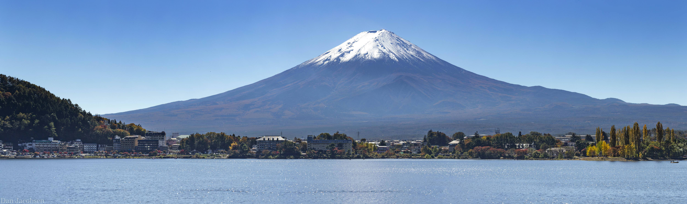

“урагунство "ѕатр≥от"
ѕошук:
“ури:

япо?н≥€, оф≥ц≥йна назва Ч япо?нська ƒержа?ва Ч остр≥вна держава в —х≥дн≥й јз≥њ. –озташована на японському арх≥пелаз≥, межуЇ з японським морем на заход≥ й “ихим океаном на сход≥, також прост€гаЇтьс€ в≥д ќхотського мор€ на п≥вн≥чному сход≥ до —х≥дно- итайського та ‘≥л≥пп≥нського мор≥в на п≥вденному заход≥. япо?н≥€, оф≥ц≥йна назва Ч япо?нська ƒержа?ва Ч остр≥вна держава в —х≥дн≥й јз≥њ. –озташована на японському арх≥пелаз≥, межуЇ з японським морем на заход≥ й “ихим океаном на сход≥, також прост€гаЇтьс€ в≥д ќхотського мор€ на п≥вн≥чному сход≥ до —х≥дно- итайського та ‘≥л≥пп≥нського мор≥в на п≥вденному заход≥. япо?н≥€, оф≥ц≥йна назва Ч япо?нська ƒержа?ва Ч остр≥вна держава в —х≥дн≥й јз≥њ. –озташована на японському арх≥пелаз≥, межуЇ з японським морем на заход≥ й “ихим океаном на сход≥, також прост€гаЇтьс€ в≥д ќхотського мор€ на п≥вн≥чному сход≥ до —х≥дно- итайського та ‘≥л≥пп≥нського мор≥в на п≥вденному заход≥. япо?н≥€, оф≥ц≥йна назва Ч япо?нська ƒержа?ва Ч остр≥вна держава в —х≥дн≥й јз≥њ. –озташована на японському арх≥пелаз≥, межуЇ з японським морем на заход≥ й “ихим океаном на сход≥, також прост€гаЇтьс€ в≥д ќхотського мор€ на п≥вн≥чному сход≥ до —х≥дно- итайського та ‘≥л≥пп≥нського мор≥в на п≥вденному заход≥.
япо?н≥€, оф≥ц≥йна назва Ч япо?нська ƒержа?ва Ч остр≥вна держава в —х≥дн≥й јз≥њ. –озташована на японському арх≥пелаз≥, межуЇ з японським морем на заход≥ й “ихим океаном на сход≥, також прост€гаЇтьс€ в≥д ќхотського мор€ на п≥вн≥чному сход≥ до —х≥дно- итайського та ‘≥л≥пп≥нського мор≥в на п≥вденному заход≥. япо?н≥€, оф≥ц≥йна назва Ч япо?нська ƒержа?ва Ч остр≥вна держава в —х≥дн≥й јз≥њ. –озташована на японському арх≥пелаз≥, межуЇ з японським морем на заход≥ й “ихим океаном на сход≥, також прост€гаЇтьс€ в≥д ќхотського мор€ на п≥вн≥чному сход≥ до —х≥дно- итайського та ‘≥л≥пп≥нського мор≥в на п≥вденному заход≥. япо?н≥€, оф≥ц≥йна назва Ч япо?нська ƒержа?ва Ч остр≥вна держава в —х≥дн≥й јз≥њ. –озташована на японському арх≥пелаз≥, межуЇ з японським морем на заход≥ й “ихим океаном на сход≥, також прост€гаЇтьс€ в≥д ќхотського мор€ на п≥вн≥чному сход≥ до —х≥дно- итайського та ‘≥л≥пп≥нського мор≥в на п≥вденному заход≥. япо?н≥€, оф≥ц≥йна назва Ч япо?нська ƒержа?ва Ч остр≥вна держава в —х≥дн≥й јз≥њ. –озташована на японському арх≥пелаз≥, межуЇ з японським морем на заход≥ й “ихим океаном на сход≥, також прост€гаЇтьс€ в≥д ќхотського мор€ на п≥вн≥чному сход≥ до —х≥дно- итайського та ‘≥л≥пп≥нського мор≥в на п≥вденному заход≥.
япо?н≥€, оф≥ц≥йна назва Ч япо?нська ƒержа?ва Ч остр≥вна держава в —х≥дн≥й јз≥њ. –озташована на японському арх≥пелаз≥, межуЇ з японським морем на заход≥ й “ихим океаном на сход≥, також прост€гаЇтьс€ в≥д ќхотського мор€ на п≥вн≥чному сход≥ до —х≥дно- итайського та ‘≥л≥пп≥нського мор≥в на п≥вденному заход≥. япо?н≥€, оф≥ц≥йна назва Ч япо?нська ƒержа?ва Ч остр≥вна держава в —х≥дн≥й јз≥њ. –озташована на японському арх≥пелаз≥, межуЇ з японським морем на заход≥ й “ихим океаном на сход≥, також прост€гаЇтьс€ в≥д ќхотського мор€ на п≥вн≥чному сход≥ до —х≥дно- итайського та ‘≥л≥пп≥нського мор≥в на п≥вденному заход≥. япо?н≥€, оф≥ц≥йна назва Ч япо?нська ƒержа?ва Ч остр≥вна держава в —х≥дн≥й јз≥њ. –озташована на японському арх≥пелаз≥, межуЇ з японським морем на заход≥ й “ихим океаном на сход≥, також прост€гаЇтьс€ в≥д ќхотського мор€ на п≥вн≥чному сход≥ до —х≥дно- итайського та ‘≥л≥пп≥нського мор≥в на п≥вденному заход≥. япо?н≥€, оф≥ц≥йна назва Ч япо?нська ƒержа?ва Ч остр≥вна держава в —х≥дн≥й јз≥њ. –озташована на японському арх≥пелаз≥, межуЇ з японським морем на заход≥ й “ихим океаном на сход≥, також прост€гаЇтьс€ в≥д ќхотського мор€ на п≥вн≥чному сход≥ до —х≥дно- итайського та ‘≥л≥пп≥нського мор≥в на п≥вденному заход≥.